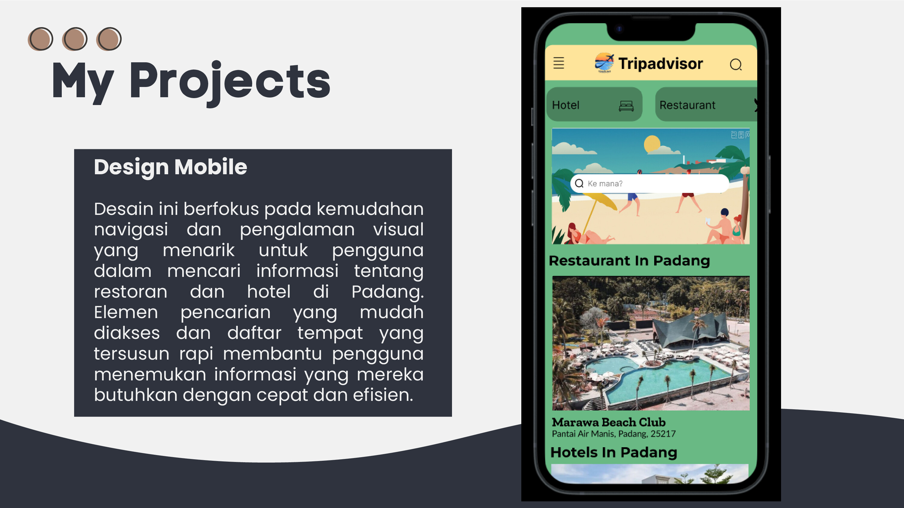
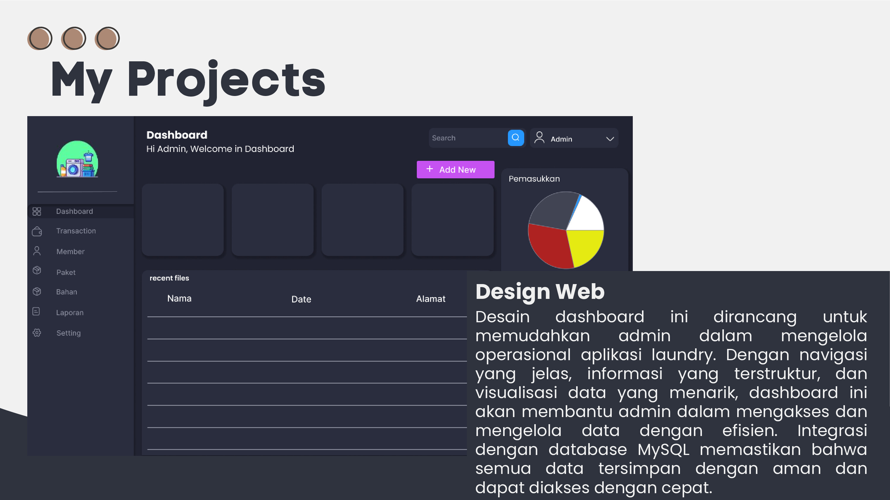
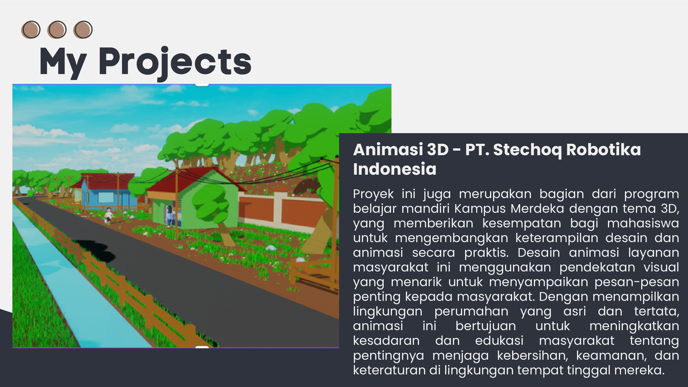

Design Mobile
Desain ini berfokus pada kemudahan navigasi dan pengalaman visual yang menarik untuk pengguna dalam mencari informasi tentang restoran dan hotel di Padang. Elemen pencarian yang mudah diakses dan daftar tempat yang tersusun rapi membantu pengguna menemukan informasi yang mereka butuhkan dengan cepat dan efisien.
Design Web
Desain dashboard ini dirancang untuk memudahkan admin dalam mengelola operasional aplikasi laundry. Dengan navigasi yang jelas, informasi yang terstruktur, dan visualisasi data yang menarik, dashboard ini akan membantu admin dalam mengakses dan mengelola data dengan efisien. Integrasi dengan database MySQL memastikan bahwa semua data tersimpan dengan aman dan dapat diakses dengan cepat.
Animasi 3D - PT. Stechoq Robotika Indonesia
Proyek ini merupakan bagian dari program belajar mandiri Kampus Merdeka dengan tema 3D, yang memberikan kesempatan bagi mahasiswa untuk mengembangkan keterampilan desain dan animasi secara praktis. Desain animasi layanan masyarakat ini menggunakan pendekatan visual yang menarik untuk menyampaikan pesan-pesan penting kepada masyarakat. Dengan menampilkan lingkungan perumahan yang asri dan tertata, animasi ini bertujuan untuk meningkatkan kesadaran dan edukasi masyarakat tentang pentingnya menjaga kebersihan, keamanan, dan keteraturan di lingkungan tempat tinggal mereka.
